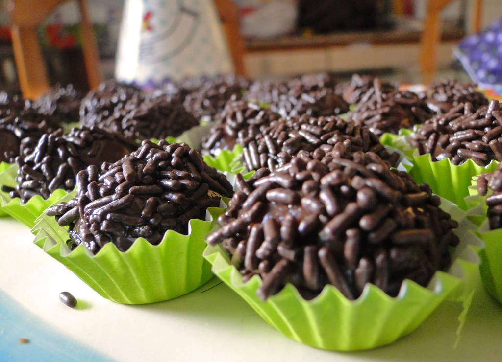

Home
How to make brazilian brigadeiro

Brigadeiro is Brazil’s most beloved sweet treat. These bite-sized, velvety chocolate truffles are made from condensed milk, cocoa powder, and butter, cooked to perfection and rolled in chocolate sprinkles. They are rich, chewy, and pure happiness in a single bite.
Equipment
Ingredients
- 1 can sweetened condensed milk (14 oz / 395 grams)
- 2 tablespoons cocoa powder
- 1 tablespoon salted butter
- 3.5 oz chocolate sprinkles or grated chocolate (1 cup /100 g)
Instructions
- Add sweetened condensed milk into a small, thick-bottomed pan and sift the cocoa powder. Mix everything.
- Turn on medium heat, add butter, and stir the whole time, constantly scraping the bottom and sides of the pan. Lower the heat as it starts boiling. Continue to stir, and you'll see that the mixture will begin to thicken and boil a little slower. Stop cooking when you can easily see the bottom of the pan and the brigadeiro is moving slower.
- Grease a plate with a bit of butter and transfer the brigadeiro mixture to this plate. Cover it with plastic wrap, and wait for it to cool. You can take it to the fridge if you want to speed up the process.
- Once it's cool, set up your working station. Line up the brigadeiro mixture, a shallow dish with sprinkles, and a tray with the candy cups opened. Also, leave a cup of water by your side too.
- Dip two fingers in the water and spread it on the palms of your hands until lightly wet. Spoon a generous teaspoon of brigadeiro, roll it between your hands and drop it on the sprinkles once you've got a ball. Cover it with the sprinkles and place the brigadeiro inside a candy cup. To make it easier, do this process in batches.